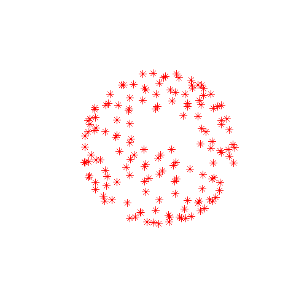
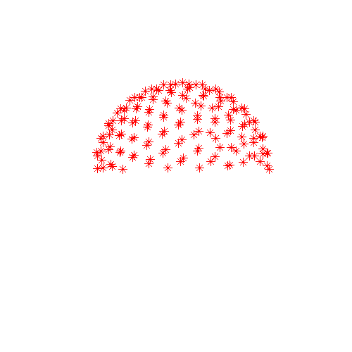

Contents
- Introduction
- Users Guide
- FAQ
eddy -- a tool for correcting eddy currents and movements in diffusion data
This is a new tool to correct for eddy current-induced distortions and subject movements. It simultaneously models the effects of diffusion eddy currents and movements on the image, allowing it to work with higher b-value data than has been possible with for example eddy_correct (FSL's earlier tool for eddy current correction).
Selected slice in 300 volumes of a data set from the HCP project |
|
On the left before correction and on the right after correction for susceptibility, eddy |

The diffusion signal is modelled using a Gaussian Process, which means that it makes very few assumptions about the diffusion signal (unlike parametric models such as for example the diffusion tensor). The only two assumptions are
- the signal from two acquisitions acquired with diffusion weighting along two vectors with a small angle between them is more similar than for two acquisitions with a large angle between them
the signal from two acquisitions along vectors v and -v is identical.
From these two assumptions it also follows that:
if v1 and v2 are two vectors with a "small" angle between them so that it can be assumed that the signal from the corresponding acquisitions is "similar" then v1 and -v2 are equally similar.
Because of the way the diffusion signal is modelled, and because eddy needs to be able to distinguish between signal variation caused by diffusion and that caused by eddy currents/movements the data needs to be acquired with either
A set of diffusion encoding directions that span the entire sphere and not just a half-sphere
- A blip-up-blip-down (phase encode reversed) acquisition
or with both. Note that "sampling on the whole sphere" does not imply twice as many directions. From a diffusion perspective sampling along v and -v is exactly equivalent whereas from the perspective of eddy current distortions they are different. One can therefore have two sampling schemes that both sample the diffusion evenly and equally well (and with the same total acquisition time), but where one is on the half sphere and the other on the whole sphere. To make this concrete look at the two sampling schemes below. In these plots the end of each vector is marked with an x-marker. They sample the diffusion in exactly the same way but the one on the left facilitates correcting for eddy currents while the one on the right does not. Note also that either of these schemes can easily be created from the other. To for example transform the half sphere scheme to the whole sphere scheme one just need to replace half the vectors by their negations.
 |
 |
Diffusion sampled on the whole sphere |
Diffusion sampled on the half sphere |
In order to check your own diffusion directions you can use the following Matlab commands
bvecs = load('bvecs'); % Assuming your filename is bvecs
figure('position',[100 100 500 500]);
plot3(bvecs(1,:),bvecs(2,:),bvecs(3,:),'*r');
axis([-1 1 -1 1 -1 1]);
axis vis3d;
rotate3dThe final command (rotate3d) will allow you to use the pointer to rotate the plot which is essential as from some angles a half sphere looks just like a whole sphere.
For eddy to work well there also needs to be a minimum number of diffusion directions. The reason for this is that the concept of "close" and "distant" vectors becomes a little pointless when there are only a handful of vectors. We don't actually know what the "minimum number" is yet but we know that with the ~60 directions that is the standard protocol at FMRIB it works well.
If it sounds like your data might be a good candidate for eddy I suggest you go on to read the manual.
Referencing
Currently there are no journal publications relating to eddy.
References appear here